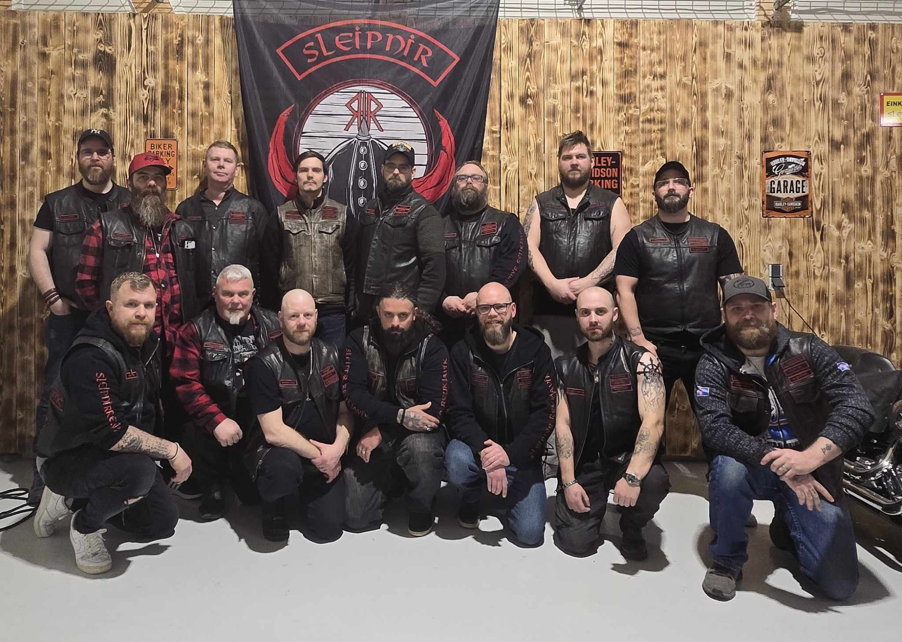

Gunnar Thorsson
Forseti
Gunnar hefur verið leiðtogi Sleipnir MC frá upphafi. Hann hefur ekið þvert yfir Evrópu og Norður-Ameríku á tveimur hjólum. Ástríða hans fyrir mótorhjólum hófst sem unglingur í Vestmannaeyjum.
Sjá nánar
Bræðralag á tveimur hjólum
Forseti
Gunnar hefur verið leiðtogi Sleipnir MC frá upphafi. Hann hefur ekið þvert yfir Evrópu og Norður-Ameríku á tveimur hjólum. Ástríða hans fyrir mótorhjólum hófst sem unglingur í Vestmannaeyjum.
Sjá nánarVaraforseti
Björk er einn af stofnmeðlimum klúbbsins og hefur gegnt margvíslegum hlutverkum í gegnum árin. Hún er þekkt fyrir sína djörfung á fjallvegum og í ófærð.
Sjá nánarRitari
Eiríkur flutti til Akureyrar árið 2011 og stofnaði norðurlandsdeild klúbbsins. Hann er bókmenntafræðingur að mennt og skrifar reglulega greinar um mótorhjólasögu á Íslandi.
Sjá nánarGjaldkeri
Sigríður er endurskoðandi að mennt og hefur haldið fjármálum klúbbsins í góðu horfi frá því hún tók við. Hún er einnig ákafur ferðamaður og hefur ekið mótorhjóli um Japan.
Sjá nánarVegameistari
Ragnar er sá sem skipuleggur allar akstursleiðir og útivistarferðir klúbbsins. Hann þekkir alla vegi landsins og hefur kortlagt bestu mótorhjólaleiðirnar á Íslandi.
Sjá nánarViðburðastjóri
Helga kemur úr listum og hefur umbylt viðburðastarfsemi klúbbsins. Hún skipuleggur allt frá sumarhátíðum upp í vinnustoður um viðhald hjóla.
Sjá nánarVélvirki
Þorsteinn er lærður vélvirki og rekur eigin verkstæði í Hafnarfirði. Hann annast viðhald og viðgerðir á hjólum klúbbsmeðlima og kennir nýjum meðlimum undirstöðuatriði vélfræði.
Sjá nánarSamskiptafulltrúi
Katrín sér um samfélagsmiðla og samskipti klúbbsins. Hún er blaðamaður að mennt og notar reynslu sína til að koma skilaboðum klúbbsins á framfæri.
Sjá nánarMeðlimur
Ólafur bættist í klúbbinn eftir að hafa búið erlendis í áratugi. Hann hefur ekið mótorhjólum í Evrópu og Asíu og kemur með fjölbreytta reynslu í klúbbinn.
Sjá nánarMeðlimur
Freydís er nýjasti meðlimurinn í klúbbnum en hefur þegar sannað sig á vegum landsins. Hún er verkfræðingur að mennt og hefur sérstakan áhuga á rafmótorhjólum.
Sjá nánar